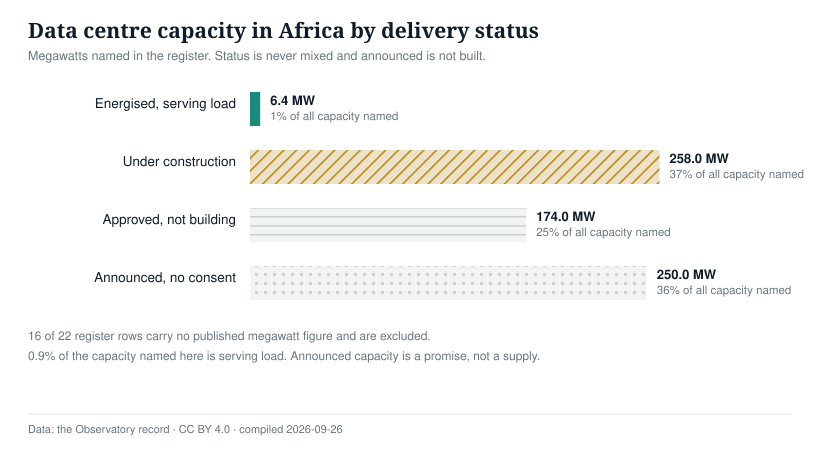
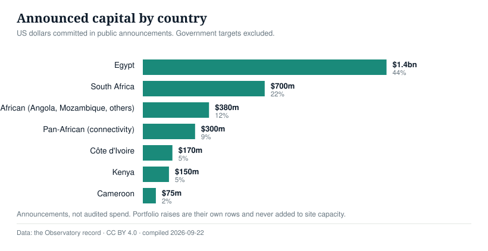

Every colocation, hyperscale and sovereign facility we can trace, with the megawatts named, the capital attached and the status kept honest. 22 rows, 16 of them with no published capacity.
6.4 MW energised of 688 MW named in the register.Megawatts named in the register, grouped by how far each project has actually got

6.4 MW serving load of 688 MW named
| Delivery status | Megawatts | Share of capacity named |
|---|---|---|
| Energised, serving load | 6.4 | 0.9% |
| Under construction | 258.0 | 37.5% |
| Approved, not building | 174.0 | 25.3% |
| Announced, no consent | 250.0 | 36.3% |
US dollars committed in public announcements. Government targets excluded, portfolio raises separated from single sites

Announcements, not audited spend
| Country | Announced capital, USD | Share of total |
|---|---|---|
| Egypt | $1,400,000,000 | 44.1% |
| South Africa | $700,000,000 | 22.0% |
| Pan-African (Angola, Mozambique, others) | $380,000,000 | 12.0% |
| Pan-African (connectivity) | $300,000,000 | 9.4% |
| Côte d'Ivoire | $170,000,000 | 5.4% |
| Kenya | $150,000,000 | 4.7% |
| Cameroon | $75,000,000 | 2.4% |
A project enters once. The date on the right is when the row was announced; status is never mixed. 16 of 22 rows carry no published megawatt figure.
| Project | Capacity | Capital | Status | Announced |
|---|---|---|---|---|
| Vodafone, Elsewedy and Cassava data centreEgypt · Vodafone, Elsewedy, Cassava Technologies | unknown | $1.0bn | Announced | 2026-09-08 |
| Nairobi Two (NBO2)Kenya · Digital Realty (iColo) | 6.4 MW | — | Energised | 2026-09-07 |
| Heka Data AI hubEgypt · Heka Data, US consortium | unknown | — | Exploring | 2026-09-04 |
| Cybastion AI hubCameroon · Cybastion | unknown | $75m | Announced | 2026-09-02 |
| NSIA AI data centreNigeria · Nigeria Sovereign Investment Authority | 100.0 MW | — | Announced | 2026-09-01 |
| Wiocc capital raisePan-African (connectivity) · Wiocc, Saudi and African backers | unknown | $300m | Funding | 2026-09-01 |
| MTN AI-ready data centresNigeria; South Africa · MTN, Al Ashram (UAE) | 150.0 MW | — | Announced | 2026-08-26 |
| Huawei AI data centre bidEgypt · Huawei | unknown | — | Exploring | 2026-08-26 |
| Cassava AI FactorySouth Africa · Cassava Technologies, NVIDIA | unknown | $700m | Energised | 2026-08-26 |
| Nigeria cloud and AI investment targetNigeria · Federal Government of Nigeria | unknown | $750m | Target | 2026-08-24 |
| Mombasa AI data centreKenya · Amaco (Greece) | unknown | KES 194bn | Announced | 2026-08-17 |
| Project BRIDGE fibre programmeNigeria · Federal Government of Nigeria | unknown | — | Under construction | 2026-08-10 |
| Airtel Kenya data centreKenya · Airtel Africa | unknown | $150m | Under construction | 2026-08-07 |
| Hassan Allam data centres (first phase)Egypt · Hassan Allam | unknown | $400m | Approved | 2026-08-05 |
| Equinix Cape Town campusSouth Africa · Equinix | unknown | — | Approved | 2026-08-04 |
| Cape Town hyperscale campus (two sites)South Africa · Undisclosed | 174.0 MW | — | Approved | 2026-07-24 |
| Côte d'Ivoire sovereign data centreCôte d'Ivoire · Government of Côte d'Ivoire | unknown | $170m | Approved | 2026-07-20 |
| Raxio expansion programmePan-African (Angola, Mozambique, others) · Raxio Group | unknown | $380m | Funding | 2026-07-14 |
| Gabon sovereign data centreGabon · Government of Gabon | unknown | — | Energised | 2026-07-08 |
| Google African cloud region (Nairobi)Kenya · Google Cloud | unknown | — | Announced | 2026-07-06 |
| Teraco portfolio (including JB7)South Africa · Teraco | 228.0 MW | — | Under construction | 2026-07-01 |
| Africa Data Centres AccraGhana · Africa Data Centres (Cassava) | 30.0 MW | — | Under construction | 2026-06-01 |
A facility enters the register when a named sponsor makes a public commitment with a capacity figure attached. Colocation resold from another operator's floor is excluded, so the same megawatt is never counted twice. Portfolio capital raises are their own rows and are never added to site capacity.
A facility is energised when it serves customer load, evidenced by an operator statement naming the date. Announcements, permits and ribbon-cuttings do not count. Digital Realty's Nairobi Two, opened 7 September 2026, is the only row in this register that qualifies.
16 of 22 rows carry no published megawatt figure, including the $1bn Egyptian facility and the Kenyan project reported in shillings. They appear with capacity marked unknown and are excluded from the chart above. Published continental estimates put Africa at 360 MW active and 238 MW under construction, so this register covers a fraction of the market, and says so.
Every infrastructure signal recorded, newest first, with research, government and company sources tagged so a paper can be told from a headline.
{kind=link}
{kind=link}
{kind=link}
{kind=link}